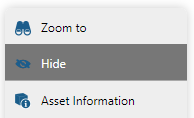
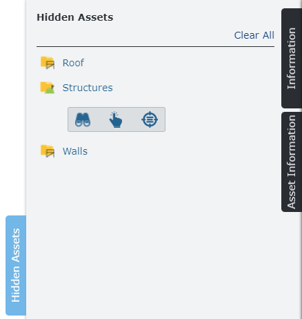
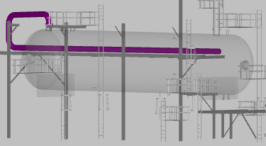

アセットを非表示にする
ビューアに表示される特定のアセットを非表示にすることができます。これは、たとえば、ユーザーが壁、屋根、その他の構造物などの障害物や気を散らす資産を隠す必要がある場合に役立ちます。アセットを非表示にすると、ビューアでアセットを表示する効率が向上します。
アセットを非表示にするには、まずビューア ウィンドウでアセットを選択し、次にアセットコンテキスト メニューで[非表示]コマンドを選択します。

非表示アクションは繰り返し実行できます。そうすることで、複数のアセットで構成される複雑な構造を非表示にして、表示されたモデルを不要な障壁から取り除くことができます。
アセットを非表示にすると、そのアセットにアタッチされているマークされたポイントもすべて非表示になります。 |
非表示にする前に: | 「壁」、「屋根」、「ドア」のアセットを非表示にした後、次のようにします。 |
|
|


非表示のアセットパネル
非表示になっているすべてのアセットが [非表示のアセット] スライドアウト パネルにリストされます。 [非表示のアセット]タブをクリックして、スライドアウトを手動で表示または非表示にします。
最初のアセットが非表示になったときに自動的に展開するように、「非表示のアセット」スライドアウトを構成することもできます。 「UI 設定」フォームの「自動拡張」設定を参照してください。 |

リストされた非表示アセットのいずれかの名前をクリックすると、使用可能なコマンドを含むツールバーが展開されます。
| 非表示のアセットの境界 (範囲) にズームします。 |
| ビューアで非表示のアセットを選択します。選択された非表示のアセットは、透明な外観を使用してビューアに表示されます。 |
| コンテンツ ブラウザで非表示のアセットを選択します。 |
右上隅にある [すべてクリア]リンクをクリックして、非表示のアセット リストをクリアし、ビューア内のすべてのアセットを再表示します。
隠された資産を選択する
(コンテンツ ブラウザまたは [非表示のアセット] パネル内)使用可能な選択コマンドの 1 つを使用して、ビューアで非表示になっているアセットを選択することができます。
選択された非表示のアセットは、特別な灰色の透明な外観を使用してビューア内に表示されます。透明な外観は、アセットが現在非表示になっていることを明確に示すために使用されます。
通常選択されたアセット: | 非表示の選択されたアセット: |
|  |

アセットの選択が解除されると、ビューアから再び消えます。